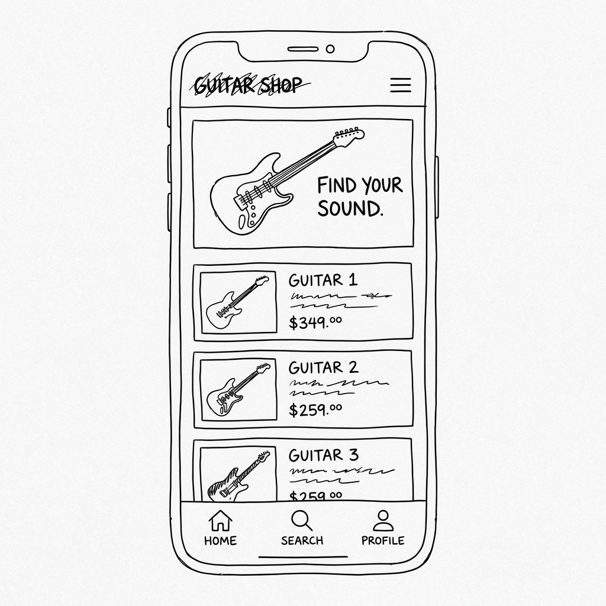

String & Wood Guitar Shop
Site Plan
Site Name
Site Name: String & Wood
Reason: This name evokes the fundamental elements of the instrument—the organic wood resonance and the metallic vibration of the strings. It suggests craftsmanship, authenticity, and a connection to the roots of music making. It sounds premium yet grounded.
Domain Availability: wmunoa86.github.io/wdd231/project/index.html
Site Purpose
The "String & Wood" website serves as a digital showroom for premium, handcrafted guitars. Its purpose is to:
- showcase a curated catalog of high-end acoustic and electric guitars with detailed specifications and high-quality imagery.
- Connect serious musicians with instruments that match their specific tonal and aesthetic requirements.
- Provide information on maintenance services to build long-term relationships with customers.
Scenarios
Scenario 1: A professional jazz musician is looking for a hollow-body guitar with a specific warm tone. They ask: "Where can I find a high-quality hollow-body guitar that is suitable for professional jazz recording, and does it come with a detailed description of its tonal characteristics?"
Scenario 2: A beginner enthusiast wants to upgrade from their starter kit. They ask: "What makes the 'Midnight Special' acoustic guitar different from the standard models, and is it a good investment for fingerstyle playing?"
Color Scheme
The color palette is inspired by the materials of lutherie: dark woods, roasted maple necks, and vintage finishes.
Deep Ebony
#1a1a1a
Used for: Main Backgrounds, Footer, High Contrast Sections
Roasted Maple
#d9a066
Used for: Buttons, Accents, Price Tags, Hovers
Rosewood Brown
#4a2c2a
Used for: Footer Backgrounds, Borders, Secondary Headers
Vintage Seafoam
#88c0d0
Used for: Subtitles, Links on Hover, Highlights
Spruce White
#f9f9f9
Used for: Primary Text, Light Accents
Typography
Headings: Playfair Display
The quick brown fox jumps over the lazy dog.
Selected for its elegance and classic serif style, evoking the tradition and artistry of guitar making. Used for all main headers (h1, h2, h3) and the logo.
Body Text: Montserrat
The quick brown fox jumps over the lazy dog.
A clean, geometric sans-serif that provides excellent readability and a modern touch to balance the classic headers. Used for all paragraph text, navigation links, and descriptions.
Wireframe
Mobile View
The mobile view focuses on stackability and easy navigation via a hamburger menu. The hero section remains prominent.

Desktop View
The desktop view expands to a grid layout for the catalog, allowing users to compare models side-by-side. The navigation bar is fully visible.